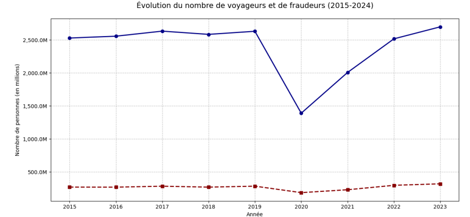
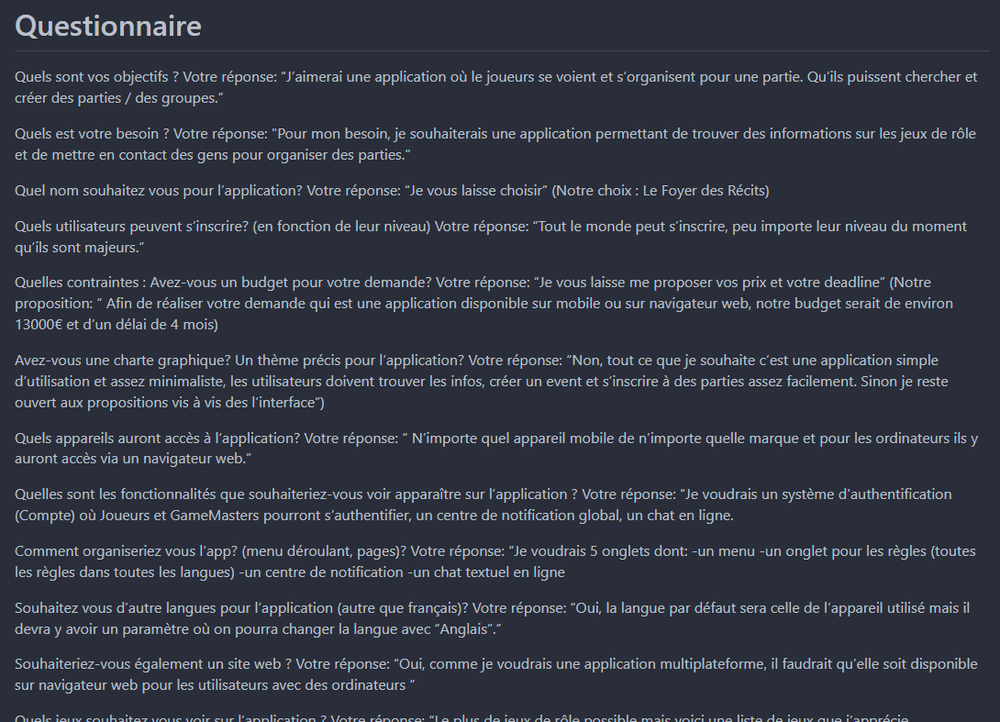

Projets
Voici une présentation de mes différents projets que j'ai pu réaliser durant ma scolarité
Voici une présentation de mes différents projets que j'ai pu réaliser durant ma scolarité
Création de base de données et analyse de statistiques sur la SNCF
Durée : 1 mois
Contexte
Dans le cadre d'un travail de groupe, nous avons mené un projet portant sur la création et l'exploitation d'une base de données
autour des données de la SNCF. Ce projet s'inscrivait dans une démarche pédagogique visant à mettre en pratique nos compétences
en SQL, Python et en analyse de données.
Objectif
L'objectif de ce projet était de concevoir une base de données permettant de stocker et organiser
des données issues de la SNCF (comme les horaires, les retards, les trajets, etc.), puis de les exploiter
pour réaliser une analyse statistique. Il s'agissait également de collaborer efficacement en équipe autour d'un projet de
données complet, du modèle de données jusqu'à l'analyse.
Travail réalisé
Nous avons commencé par choisir les jeux de données utilisés et par définir un MLD adapté aux
besoins du projet. Puis, nous avons conçu la base de données en SQL directement dans Python grâce à un programme de connexion en SSH,
en créant les différentes tables (Gares, Lignes, Voyageurs, etc.) et en important les données.
Ensuite, nous avons utilisé Python (avec les bibliothèques Pandas et SQLAlchemy) pour interroger la base,
nettoyer les données si nécessaire, et réaliser les analyses demandées. Un travail de visualisation a également été
amorcé pour mieux représenter les résultats grâce à la bibliothèque Matplotlib.
Résultats
Nous avons pu aboutir à une base de données fonctionnelle et exploitable, et plusieurs indicateurs clés ont été calculés.
Bien que nous n'ayons pas encore reçu les résultats ou la validation finale du projet, cette expérience nous a permis
d'apprendre à concevoir une base de données en groupe, à utiliser efficacement SQL et Python ensemble, et à interpréter des
données statistiques dans un contexte professionnel.
Voici notre MLD, les liens représentent les datasets utilisés et récupérables directement sur le site de la SNCF.
Voici un des graphiques que nous avons présenté pour le rendu final de notre projet.

Conception d'une application de jeu de rôle – Collecte et analyse des besoins client
Durée : 2 semaines
Contexte
Ce projet avait pour but de répondre à une demande client portant sur la création d'une application dédiée aux jeux de rôle.
L'application devait permettre aux utilisateurs de créer et rejoindre des groupes, organiser des sessions de jeu, et
échanger via un système de messagerie intégré.
Objectif
Comprendre et mettre en forme les besoins du client afin de concevoir une application fidèle à ses attentes,
à la fois sur le plan fonctionnel et en termes d'apparence.
Travail réalisé
Des échanges réguliers avec le client ont permis de récolter les besoins de manière structurée.
À partir de ces données, un cahier des charges fonctionnel a été rédigé, accompagné de maquettes et
de scénarios utilisateurs. Le tout a été rassemblé dans une maquette finale réalisée sur Canva.
Résultats
Malgré un travail abouti, la note finale a été en dessous de nos attentes, principalement à cause d'un problème
dans le rendu. Nous avons eu la note de 7,5/20. Cette difficulté nous a permis de prendre conscience de l'importance cruciale de la gestion du temps
dans un projet client. Ce retour d'expérience a renforcé notre rigueur dans l'organisation et la planification
pour les projets suivants.
Ici, un extrait de notre maquette d'application, sur la page d'accueil.
Voici un extrait d'un des différents questionnaires que nous avons envoyés au client.

Création d'un petit jeu sur le logiciel RPG Maker VX Ace
Durée : 3 semaines
Contexte
Ce projet est né de mon envie personnelle de me lancer dans la création d’un jeu vidéo.
J’ai décidé de le faire en dehors d’un cadre scolaire ou professionnel, principalement animé par une envie de création et
par passion. Pour cela, j’ai utilisé RPG Maker VX Ace, un logiciel très simple à prendre en main, qui permet de créer facilement
des jeux en 2D. Sans avoir besoin de taper de ligne de code.
Objectif
Mon objectif principal était de progresser dans la création de jeux vidéo, en découvrant toutes les étapes de
développement, du début à la fin. Je voulais surtout vivre l’expérience complète de créer un jeu moi-même et pouvoir le
montrer à mes amis pour avoir un premier retour sur mon travail.
Travail réalisé
J’ai réussi à créer un petit jeu qui dure environ 30 à 40 minutes. J’ai imaginé une histoire, créé les cartes,
écrit les dialogues, mis en place des quêtes et des combats, et ajouté des images et de la musique.
J’ai aussi passé du temps à tester le jeu pour corriger les bugs, temps qui était plus long que prévu.
Résultats
J'ai pu pour la première fois de ma vie avoir un jeu entièrement fini. Ce projet a été ma première vraie expérience dans
la création de jeu vidéo. J’ai pu avoir des retours de joueurs, ce qui m’a permis de prendre du recul sur mon travail et
de progresser, surtout en game design. Cette expérience m’a conforté dans l'envie de continuer et d’aller plus loin dans ce domaine.